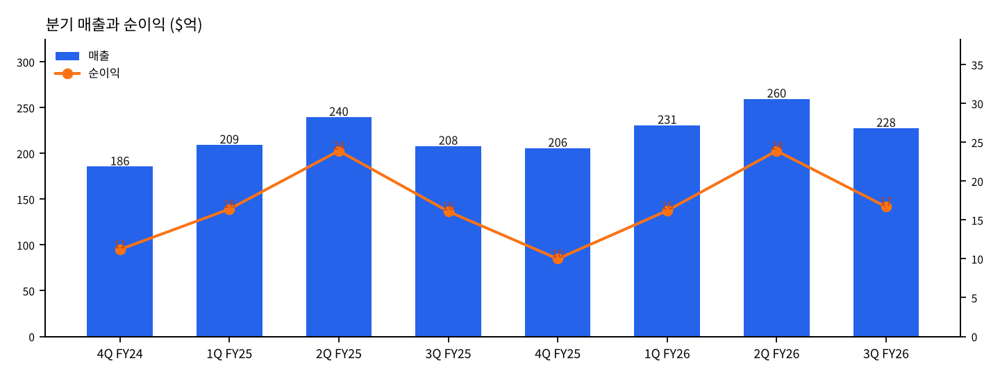
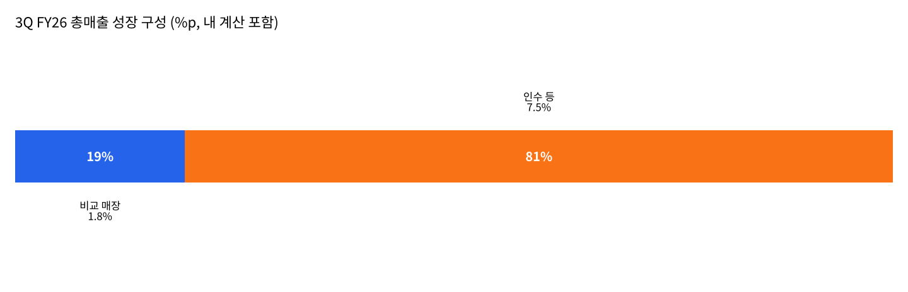
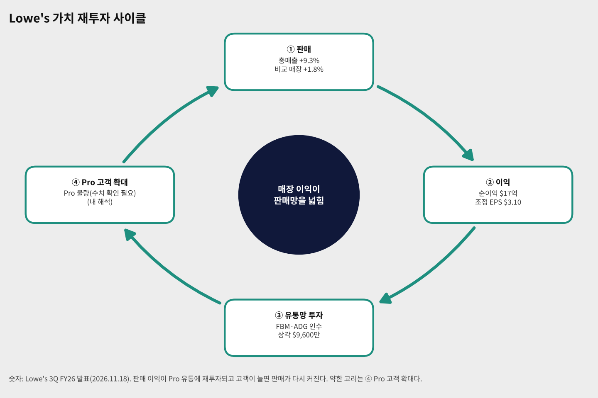

Lowe's는 일반 소비자(DIY)와 전문 시공업자(Pro)에게 자재·가전을 판다. 인수한 FBM·ADG는 전문 시공업자용 자재 유통망이다.
| 항목 | 내용 |
|---|---|
| 종목 | Lowe's (LOW) · NYSE · 홈센터 · 노스캐롤라이나 마운트 일라이 |
| 최근 분기(3Q FY26) | 순이익 $17억, 조정 EPS $3.10 |
| 핵심 사업 | DIY 홈센터, Pro 고객, 온라인, FBM·ADG 인수 유통 |
| 직원 수 | 약 276,000명(트레이딩뷰) |
| 멀티플 | PER·PEG·P/S는 08~10 항목 표 참조 |
| 직책 | 인물 | 역할·특징 |
|---|---|---|
| 회장·CEO | 마빈 엘리슨(Marvin Ellison) | Pro 고객 확대와 인수를 통한 유통 확장을 이끈다 |
| CFO | (확인 필요) | 회사 공개 자료 기준 확인 필요 |
경영 스타일: 전문가 시장 확대. DIY 중심에서 Pro 고객과 자재 유통까지 영역을 넓히는 방식이다.
매장과 온라인 재고를 연결해 주문·배송을 효율화한다(세부 수치 확인 필요).
FBM·ADG 인수로 전문 시공업자 대상 자재 유통을 키우는 방향이다.
다음 실적발표는 세 가지 질문에 답하는 자리다.
1. 비교 매장 매출이 늘어나나?
2. 인수 효과를 이익으로 바꾸나?
3. 연간 가이던스를 맞추나?
한 줄 판정 규칙: 첫 질문(비교 매장 매출)이 플러스로 이어지면 약한 고리인 ② 인수 이익 전환이 풀린다고 본다.
일정: 4Q FY26 실적 발표는 2027.02.24 예정(트레이딩뷰).
| 분기 | 매출 | 순이익 | EPS | 조정 EPS | 특이 사항 |
|---|---|---|---|---|---|
| 4Q FY24 | $185.5억 | $11.2억 | 1.99 | 1.93 | |
| 1Q FY25 | $209.3억 | $16.4억 | 2.92 | 2.92 | |
| 2Q FY25 | $239.6억 | $23.9억 | 4.27 | 4.33 | |
| 3Q FY25 | $208.1억 | $16.1억 | 2.88 | 3.06 | |
| 4Q FY25 | $205.8억 | $10.0억 | 1.78 | 1.98 | |
| 1Q FY26 | $230.8억 | $16.2억 | 2.90 | 3.03 | |
| 2Q FY26 | $259.6억 | $23.9억 | 4.27 | 4.40 | |
| 3Q FY26 | $227.6억 | $16.7억 | 2.98 | 3.10 | FBM·ADG 인수 반영, 비교 매장 매출 +1.8% |
매출은 트레이딩뷰 스캐너의 분기 총매출이라 회사가 발표한 순매출과 다를 수 있다. 회계연도는 1월 말에 끝나며 3Q FY26은 2026년 10월 30일에 끝난 분기다. 매출·순이익·EPS(GAAP 희석)는 트레이딩뷰 스캐너, 조정 EPS는 트레이딩뷰 실적 페이지의 Reported 값이다. 분기 정렬은 오래된 분기→최신이다.

흐름 요약: 최근 분기 매출은 $227.6억로 전년 동기 $208.1억 대비 +9.4%, 순이익은 $16.7억(전년 $16.1억)다. 최근 4분기 GAAP EPS는 $11.93, 조정 EPS는 $12.51다.
| 항목 | 내용 | 3Q FY26 성장 | 비고 |
|---|---|---|---|
| 비교 매장 매출 | 기존 매장·온라인 | +1.8% | 회사 발표 |
| 인수·신규 효과(내 계산) | FBM·ADG 등 | +7.5%p | 총 +9.3%에서 뺀 값 |

총매출 성장의 대부분이 인수 효과라 비교 매장 매출이 실제 수요를 보여 준다.
Lowe's는 집을 고치고 꾸미는 모든 고객에게 자재와 서비스를 공급하는 것을 목표로 한다.
| 축 | 내용 |
|---|---|
| 고객 | DIY와 Pro |
| 확장 | FBM·ADG 인수 |
| 매출 | 분기 총매출 +9.3% |

| 이동평균 | 값 | 종가 대비 | 위치 |
|---|---|---|---|
| 5일선 | $223.30 | -1.2% | 종가 아래 |
| 20일선 | $218.10 | +1.1% | 종가 위 |
| 50일선 | $201.63 | +9.4% | 종가 위 |
| 100일선 | $206.82 | +6.7% | 종가 위 |
| 200일선 | $222.58 | -0.9% | 종가 아래 |
52주 고가 $293.06(2026-02-12)·저가 $178.45(2026-10-05) 범위에서 종가 $220.60는 20일선, 50일선, 100일선을 웃돌고 5일선, 200일선은 밑돈다.
| 규칙 | 기준 | 현재 값 | 신호 |
|---|---|---|---|
| 장기 추세 필터 | 종가 vs 200일선 | $220.60 < $222.58 | 매도 |
| 중장기 교차 | 50일선 vs 200일선 | $201.63 < $222.58 | 매도 |
| 단기 교차 | 20일선 vs 50일선 | $218.10 > $201.63 | 매수 |
| 돈키언 채널 | 55일 고가 $235.00 / 저가 $178.45 | 중간값 $206.72 위 | 매수 |
| 1개월 모멘텀 | 21거래일 수익률 | +12.2% (기준 $196.56) | 매수 |
| 3개월 모멘텀 | 63거래일 수익률 | +2.1% (기준 $216.09) | 매수 |
| 6개월 모멘텀 | 126거래일 수익률 | +1.5% (기준 $217.41) | 매수 |
| 12개월 모멘텀 | 252거래일 수익률 | +0.5% (기준 $219.57) | 매수 |
| 종합 (8개 평균) | +0.50 | 매수 |
해석: 매수 신호 6개(단기 교차, 돈키언 채널, 1개월 모멘텀, 3개월 모멘텀, 6개월 모멘텀, 12개월 모멘텀), 매도 신호 2개(장기 추세 필터, 중장기 교차). CTA 점수 +0.50(매수). 14일 ATR $7.60 (3.4%), 52주 고가 $293.06 · 저가 $178.45.
| 가격 | 기준 | 무엇이 바뀌나 |
|---|---|---|
| $235.00 | 55일 고가 | 돌파 시 채널 상단 갱신 |
| $222.58 | 200일선 | 종가가 이 선 위/아래인지로 장기 추세 신호가 바뀜 |
| $219.57 | 12개월 모멘텀 기준가 | 종가가 이 가격 위면 12개월 신호 매수 |
| $217.41 | 6개월 모멘텀 기준가 | 종가가 이 가격 위면 6개월 신호 매수 |
| $216.09 | 3개월 모멘텀 기준가 | 종가가 이 가격 위면 3개월 신호 매수 |
| $206.72 | 돈키언 중간값 | 55일 채널 중간값 위/아래로 신호가 바뀜 |
| $196.56 | 1개월 모멘텀 기준가 | 종가가 이 가격 위면 1개월 신호 매수 |
| $178.45 | 55일 저가 | 이탈 시 채널 하단 갱신 |
가격 수준은 신호가 바뀌는 기준선일 뿐 진입·청산 가격 제안이 아니다. 20일/50일 교차는 이동평균 자체가 움직여 단일 가격으로 표시하지 않았다. 일봉·주봉은 종가 기준 직접 계산(고저 데이터 미사용)이다.
| 악재 요인 | 내용 | 강도 |
|---|---|---|
| 주택 경기 | 주택 거래·개량 수요 둔화 | 중간 |
| 인수 부담 | 무형자산 상각 $9,600만, 통합 비용 | 중간 |
| 가이던스 | 연간 수치 재확인 필요 | 참고 |
| 티커 | 회사 | PER(TTM) | PEG | P/S | EPS 성장(YoY) |
|---|---|---|---|---|---|
| LOW | Lowe's | 17.6배 | 7.99 | 1.34배 | +2% |
| HD | Home Depot | 23.5배 | – | 1.97배 | -2% |
| TSCO | Tractor Supply | 20.8배 | – | 1.28배 | -10% |
| TGT | Target | 15.4배 | 0.48 | 0.67배 | +31% |
| WMT | Walmart | 46.1배 | 11.18 | 1.38배 | +4% |
비교 결론: Lowe's의 PER 17.6배는 Home Depot·Tractor Supply·Walmart보다 낮고 Target(15.4배)보다 높다. PEG 7.99는 EPS 성장률이 낮아 높게 나온다.
현금·부채는 트레이딩뷰 스캐너 값이다. 인수로 부채가 늘어난 구조다.
| 지표 | 값 | 출처 | 해석 |
|---|---|---|---|
| 현금·단기투자 | $37억 | 트레이딩뷰 스캐너(최근 분기) | |
| 총부채 | $420억 | 트레이딩뷰 스캐너(최근 분기) | |
| 순부채(부채−현금) | $383억 | 내 계산 | 현금 대비 부채 부담 |
| 잉여현금흐름(TTM) | $80억 | 트레이딩뷰 스캐너 | |
| TTM 매출 | $924억 | 트레이딩뷰 스캐너 |
| 기준 | 매출 | P/S | 비고 |
|---|---|---|---|
| 내 계산(종가 ÷ 최근 4분기 매출 합계) | $923.8억 | 1.34배 | 시총은 정렬용 데이터에서만 사용 |
| 동종(트레이딩뷰) | – | HD 1.97배 · TSCO 1.28배 · TGT 0.67배 · WMT 1.38배 | 11.19 |
해석: 부채가 현금을 훨씬 웃돈다(아래 표). 인수 자금을 현금흐름으로 갚는 속도가 핵심이다(내 해석).
EBITDA는 영업활동의 현금 창출력을 보는 지표이고, PEG는 PER을 EPS 성장률로 나눈 값이다. EBITDA·FCF는 트레이딩뷰 TTM 값이다.
| 지표 | 값 | 산출 |
|---|---|---|
| EBITDA(TTM) | $128억 | 트레이딩뷰 스캐너 |
| EBITDA 마진 | 13.9% | EBITDA ÷ TTM 매출(내 계산) |
| FCF 마진 | 8.7% | FCF ÷ TTM 매출(내 계산) |
| PER(GAAP TTM) | 18.5배 | $220.60 ÷ $11.93 |
| PER(조정 TTM) | 17.6배 | $220.60 ÷ $12.51 |
| 방식 | PER | EPS 성장률 | PEG | 판정 |
|---|---|---|---|---|
| 조정 EPS (TTM $12.51) | 17.6배 | +2% ($12.24 → $12.51) | 7.99 | 기준 초과 |
| GAAP EPS (TTM $11.93) | 18.5배 | -1% ($12.06 → $11.93) | 산출 불가 | 참고 |
판정: 조정 EPS 기준 PEG 7.99 → 1.0 초과 PEG 기준은 1.0 이하 투자 적격, 0.5 이하 적극 매수다. EPS 성장률은 최근 4분기 EPS 합계를 직전 4분기 합계와 비교한 값(내 계산)이고, 일회성 항목이 있으면 조정 EPS 행을 함께 본다.

Lowe's의 사이클: 판매 이익이 Pro 유통 인수에 재투자돼 고객을 넓히고, 그 고객이 다시 판매를 키우는 순환이다.
| 고리 | 현재 숫자·근거 |
|---|---|
| ① 판매 | 3Q FY26 총매출 +9.3% · 비교 매장 매출 +1.8% |
| ② 이익 | 순이익 $17억 · 조정 EPS $3.10(+1.3%) |
| ③ 유통망 투자 | FBM·ADG 인수 관련 무형자산 상각 $9,600만 |
| ④ Pro 고객 확대 | Pro 매출 비중은 보고서에 없음(내 해석) |
사이클의 특징: 약한 고리는 ④ Pro 고객 확대다(Pro 매출 비중 수치가 보고서에 없다). "(내 해석)"은 보고서 수치가 아닌 해석이다.